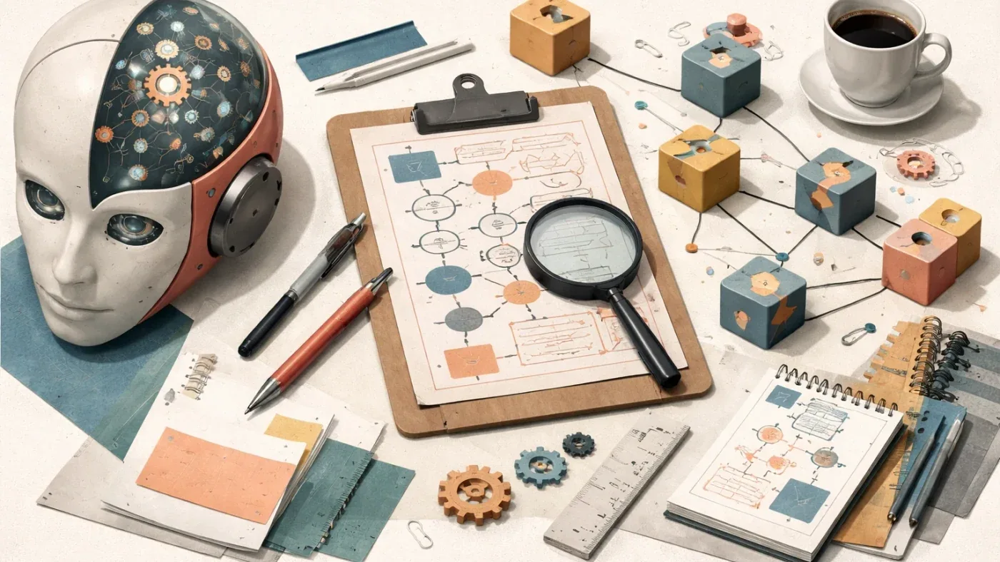
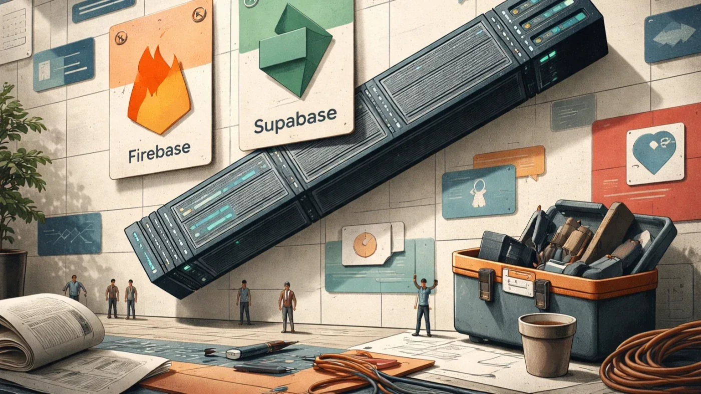

РоссияКод
Советский школьник Вадим Мацкевич создал радиоуправляемого робота В2М
Школьник из СССР собрал андроида за два года без бюджета — в отличие от США, потративших $2,4 млн
Habr AI
15 июн. 2026 г.Релизы, исследования, продукты, инвестиции и AI-рынок.
Дайджест · 751 новостных материалов · Выпуск за 28 сентября — 3 октября 2026
Школьник из СССР собрал андроида за два года без бюджета — в отличие от США, потративших $2,4 млн

С 8 июля Claude может попросить паспорт: что изменилось в политике Anthropic и кого это коснётся

Наделла боится не конкурентов — он боится, что корпоративные знания утекут к нескольким ИИ-гигантам

Как обучение на синтетических данных приводит к «коллапсу модели» — и почему Google всё ещё предпочитает человеческий контент.

ИИ-модели в военных играх сами выбирали ядерный удар — и никто их к этому не подталкивал

Как Битрикс24 измерял качество RAG: экспертный датасет против синтетики и проблема leakage.

60 бесплатных уроков по IT с 15 июня: ИИ-агенты, Kafka, Kubernetes, QA и управление командами

Разработчик БПЛА выяснил: Claude не ошибается — он честно продолжает вашу недосказанную мысль

Юрист без опыта в коде написала ИИ-комплаенс для геймдев-студий — и он работает за 14 секунд

Как машиночитаемые контракты между микросервисами помогают LLM не терять контекст при планировании фич

Рекордные прибыли и массовые увольнения: ИИ как оправдание и реальность расслоения

Как собрать сквозную аналитику B2C за две недели — и почему потом ещё месяцы на атрибуцию
РКН предложил ГосVPN для разработчиков — и это лишь одна из IT-новостей недели из России
Испанский стартап Orbio привлёк $21 млн на ИИ-агентов для найма и управления персоналом

Одиночный агент на простых задачах удешевляет решение в 2–4 раза без потери качества, но сложные задачи требуют команды.
Создатель Eiffel объяснил, почему ИИ-код без верификации опаснее, чем кажется

США ввели экспортные ограничения на ИИ-модель Mythos от Anthropic из-за подозрений в доступе Китая. что известно?

Крупнейшее IPO и гонка ИИ-компаний за публичные деньги.
Как тимлид создал ИИ-планировщик в соло-режиме, используя агента Codex и онтологию предметной области
100 ИИ-агентов прожили 10 лет в симуляции: дружба, выгорание и смена карьеры без сценария.
SymFSM превращает LLM из генератора текста в вычислимую машину мышления с контролируемыми переходами.

Microsoft Research придумала, как видеогенератор запоминает комнату — без хранения ни одного пикселя

Google открыл стандарт OKF: Markdown-файлы вместо разрозненных вики, каталогов и комментариев в коде
Как устроен теневой рынок труда за кулисами ИИ: $9 в день, NDA и психологические травмы
Почему разработчики, доверившись Claude Code, рискуют потерять базовые навыки — аналогия с авиацией.
Siemens запустила Eigen Engineering Agent — ИИ для ПЛК, который понимает контекст проекта и сам проверяет код.

KPMG продавала клиентам ИИ через кейсы, которых не существовало — скандал разобрал GPTZero

BaaS: готовые backend-сервисы для авторизации, БД и realtime. Firebase vs Supabase — что выбрать.
Почему антивирус не защищает завод — и как ИИ учится видеть атаки без сигнатур

Новый benchmark показал: ИИ-агенты видят нужный файл, но пропускают критичные строки кода